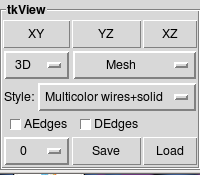
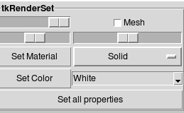
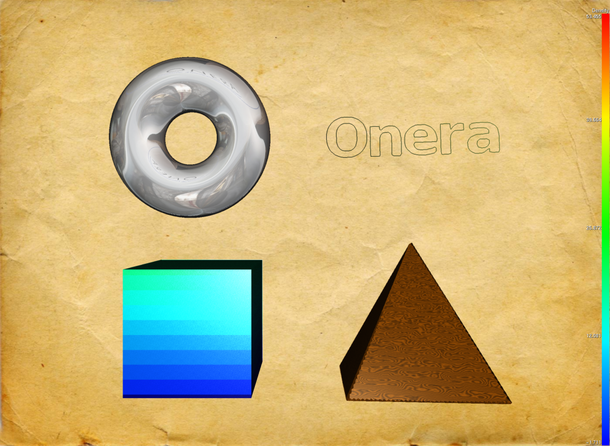

This page describes how to change and customize the view.
You should already have read how to select zones and how to open applets.
If you don't have a file to manipulate, try this sample file: [tryView.cgns].
Open Visu::tkView by right clicking on Visu and choosing tkView:

tkView applet.
- The first line of widgets (XY - YZ - XZ) are used to quickly set a
view aligned with the axis.
- The 3D/2D widget is used to switch to a 2D view. Note that in 2D mode,
the view is automatically XY.
- The next widget is used to toggle the view type between
Mesh/Solid/Render/Scalar/Vector. Mesh view displays wireframe meshes.
Solid view displays plain mesh faces. Render is a mode, where
you can customize the display style zone by zone. It will be further
explained in the "Render mode" section. Scalar is used to display
a simple scalar field using color maps.
Vector can display vector fields. Those two modes are detailed in
next tutorials.
For each view type, you can change your prefered style.
- The AEdges and DEdges button are used to display the activated/deactivated
zone contours.
- The next line is used to save the view settings into the CGNS tree.
Thanks to that you can save your view settings and reload it later.
Note that you can save different settings in different slots.
- In tkView: switch to render mode using the view type toggle
button (second line).
In this mode, you will be allowed to set a different rendering type for
each zone.
- Open Render::tkRenderSet:

tkRenderSet applet.
- Select a zone (either by shift+click in the graphic window) or by shift-click
in the tkTree window).
Select a material in tkRenderSet (Solid/Flat/Glass...),
Then choose a color. If a field is defined in zones, you can use it as a color.
Then click on "Set all properties".
- You can refine the settings using the two first line widgets:
The first slider enable to use transparency.
The second enables to display an additional wireframe mesh.
The third and fourth widgets enable fine tuning of the material settings.

Example of rendering.
Additional effects can be added with Render::tkEffects.
With this applet, you can add shadow and set the shadow angles.
Depth of field can also be added. This effect blurs far objects as for real
photography.
You can finally set the gamma correction of the global image. The enables
to make the image looks brighter or darker.